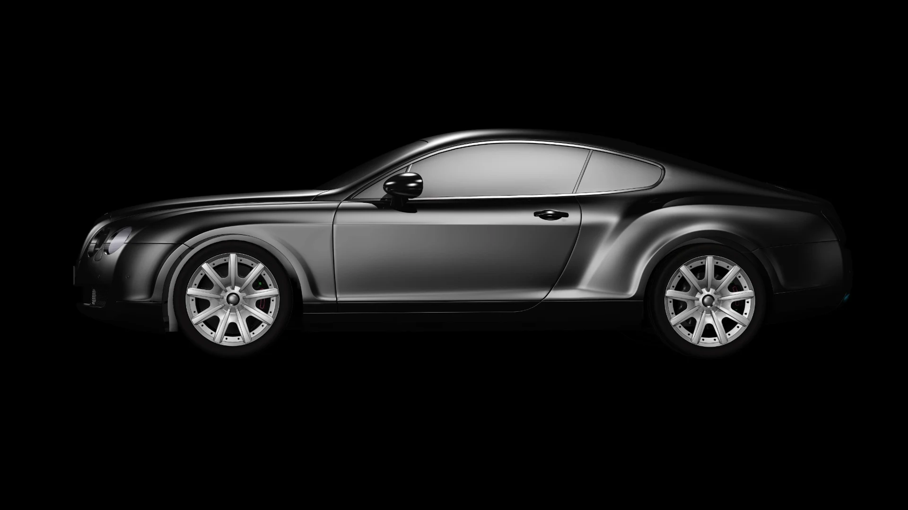
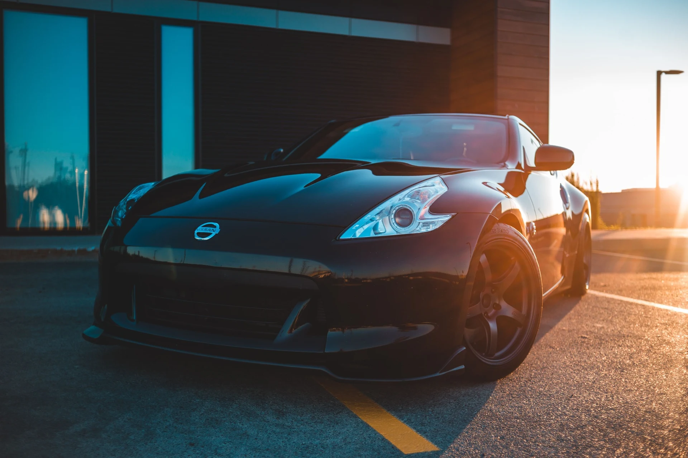
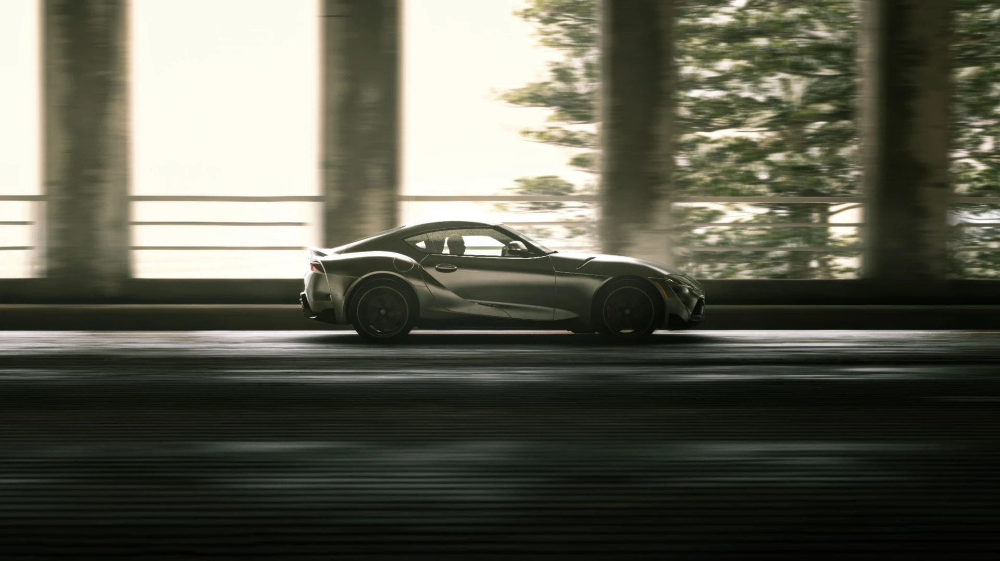
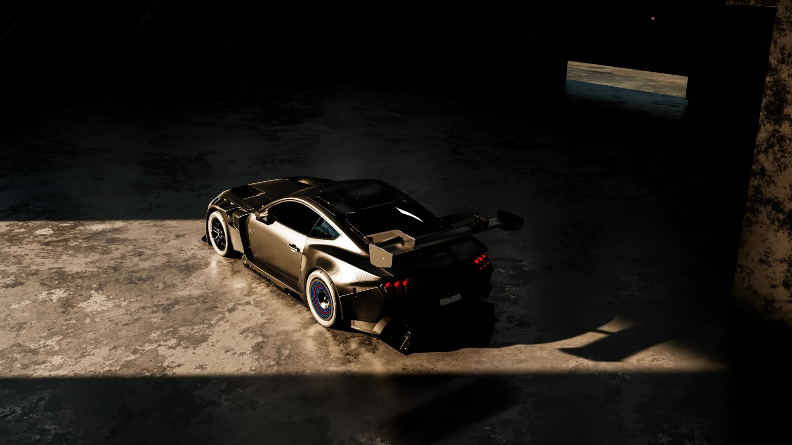
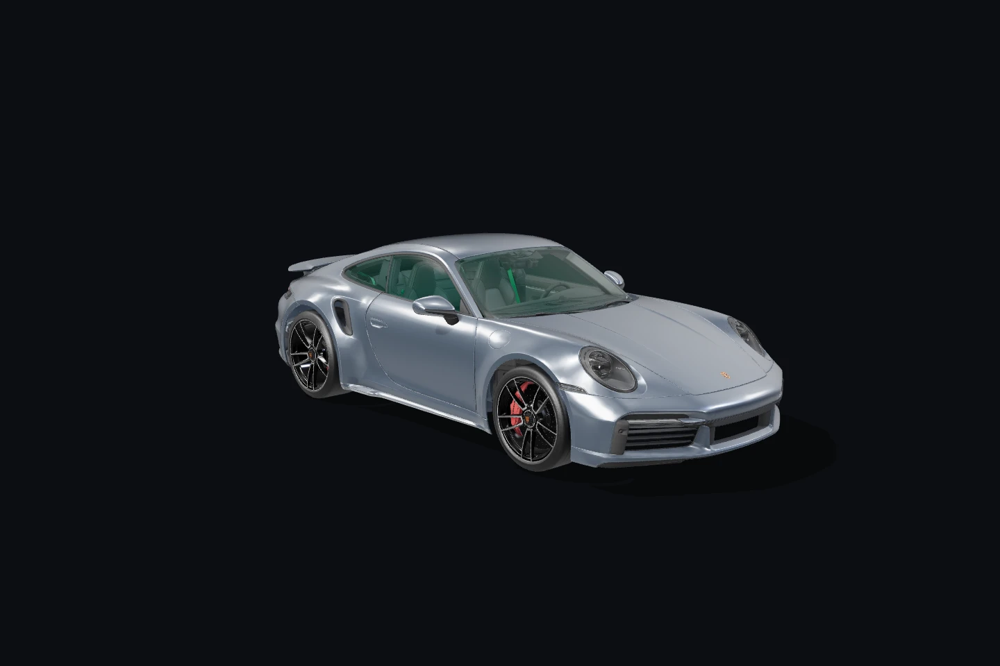

Observar.
Entender o automóvel, seus materiais, seu estado e sua rotina.



VANTA / AUTOMOTIVE PRESERVATION
Preserve o extraordinário.
A forma muda o olhar.
O cuidado preserva a essência.
A escolha. A primeira volta. O olhar antes de fechar a garagem. Há algo em um automóvel que vai além da máquina.
A VANTA nasce para preservar essa conexão. Com atenção à superfície, respeito aos materiais e precisão em cada detalhe.

02 / PRECISÃO EM CADA ÂNGULO

01 / REVELAR
Correção de pintura para revelar a clareza e a expressão do acabamento.
03 / O SISTEMA VANTA
Cada superfície tem uma história.
Cada tratamento, uma razão.
Um trabalho preciso sobre o acabamento para reduzir marcas e recuperar a leitura da pintura. A abordagem começa pela avaliação da superfície.
CORREÇÃO E REFINAMENTO DA PINTURAProteção cerâmica para complementar a preservação do acabamento e facilitar os cuidados de rotina. Preparação e aplicação fazem parte do mesmo processo.
PROTEÇÃO CERÂMICAPelícula de proteção aplicada nas áreas definidas na avaliação do veículo. Um cuidado pensado para conviver com o uso, respeitando as linhas do automóvel.
PELÍCULA DE PROTEÇÃO / PPFLimpeza e conservação orientadas pelos materiais do interior. Couro, tecidos e acabamentos recebem atenção específica, preservando a experiência a bordo.
CONSERVAÇÃO DO INTERIORALÉM DO BRILHO
Na forma como a luz encontra a pintura. Na textura que se mantém. No acabamento que merece um segundo olhar.
Preservar é reconhecer o valor
do que já é extraordinário.
04 / DO PRIMEIRO OLHAR À ENTREGA
Entender o automóvel, seus materiais, seu estado e sua rotina.
Escolher os cuidados e a sequência de trabalho para cada superfície.
Executar, revisar o acabamento e orientar os próximos cuidados.
A EXPERIÊNCIA CONTINUA FORA DA GARAGEM.
O PRÓXIMO CAPÍTULO
O cuidado certo começa com uma conversa.